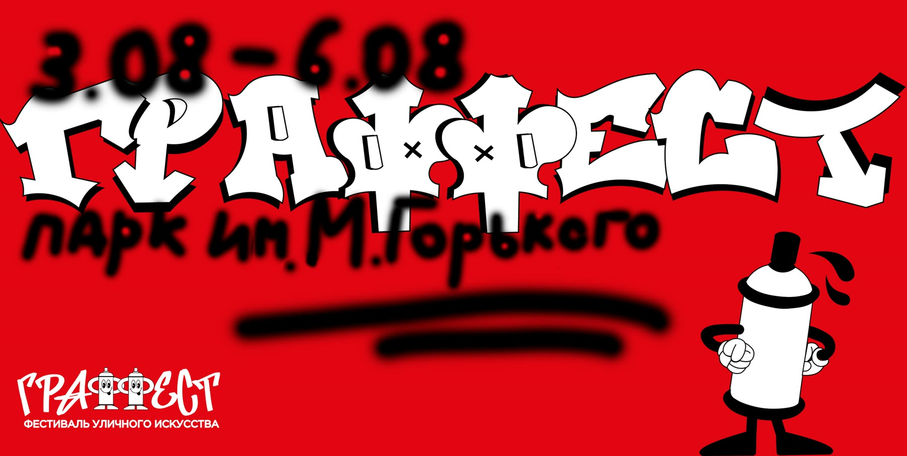
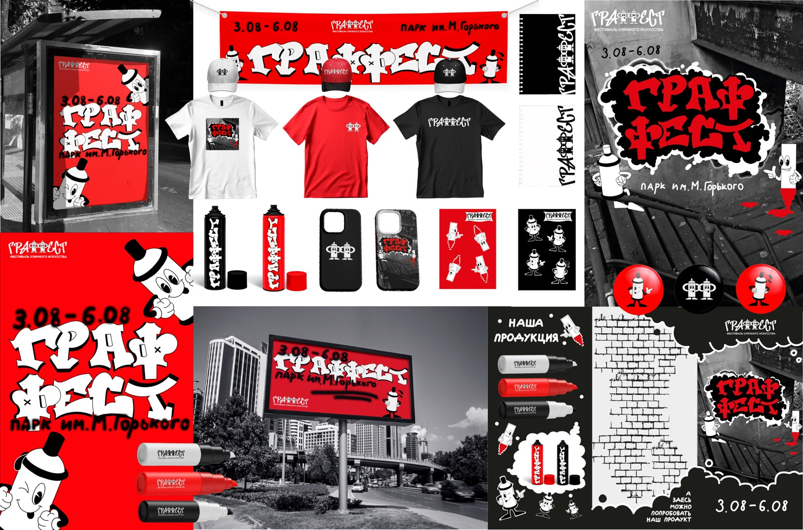
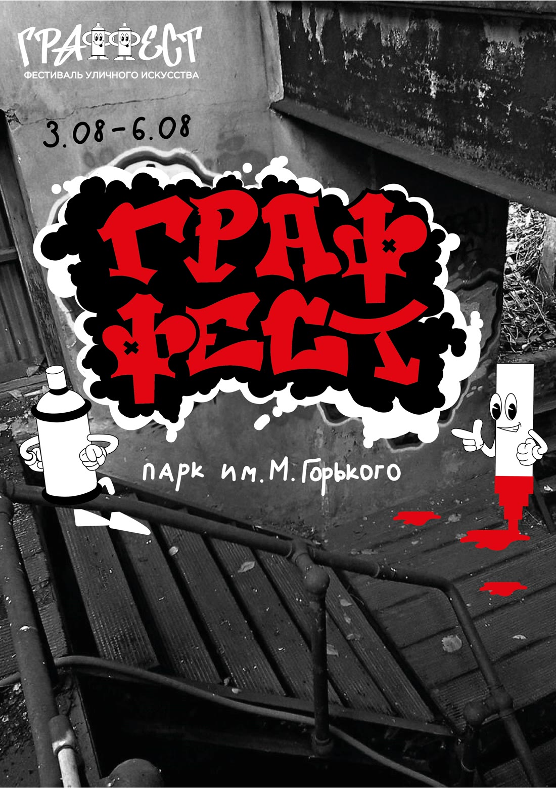
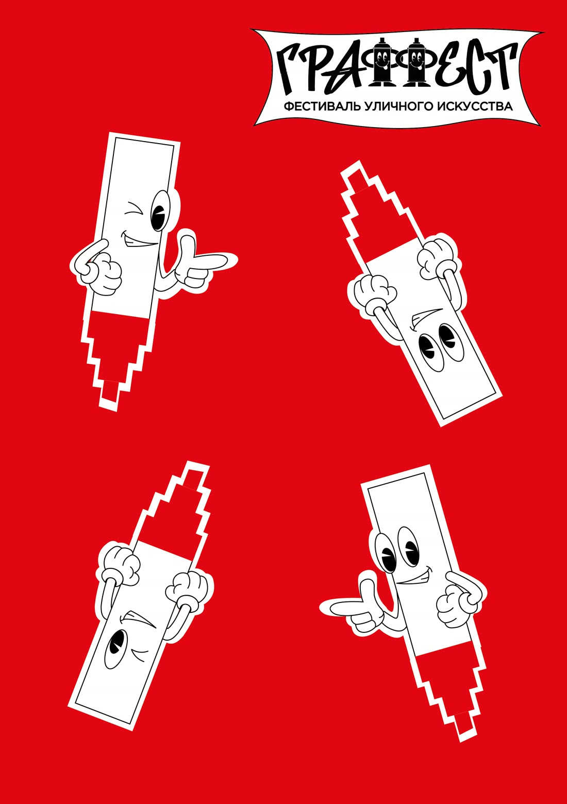
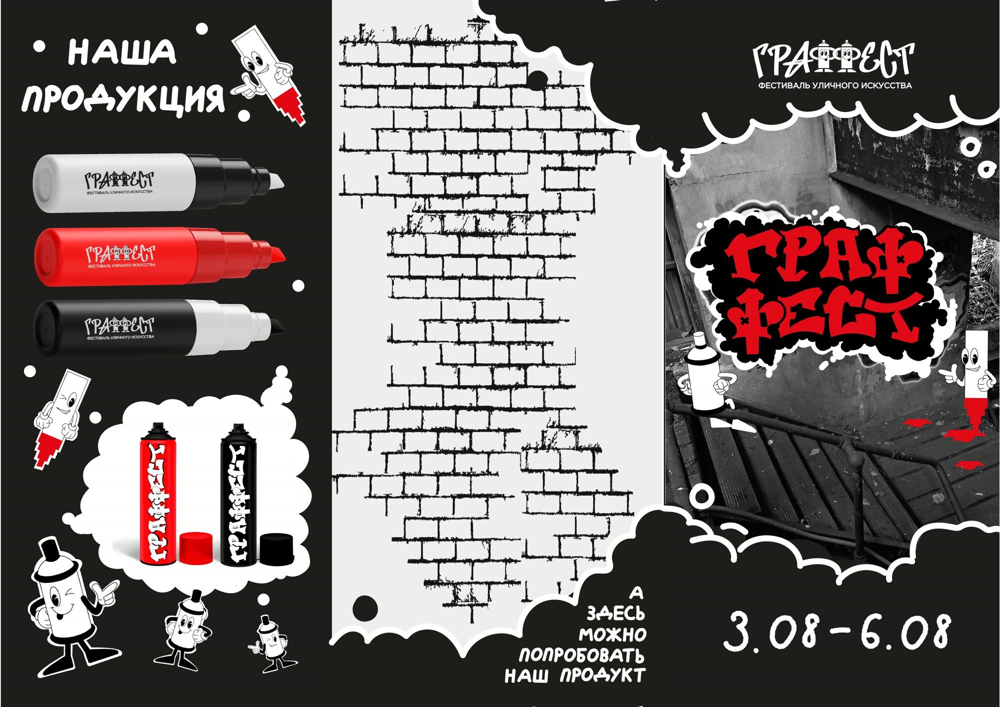
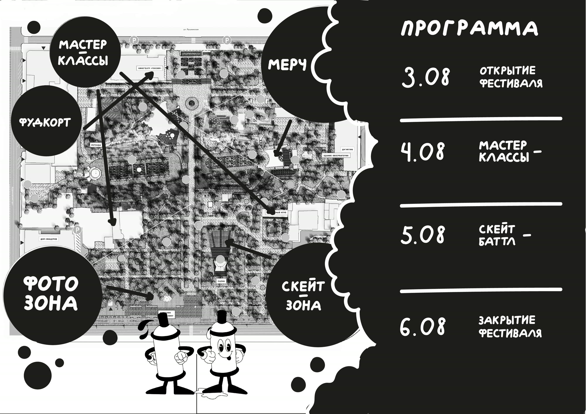

ГРАФФЕСТ — айдентика фестиваля уличного искусства

О проекте
Полная визуальная концепция фестиваля уличного искусства «ГРАФФЕСТ»: от логотипа и маскотов до печатной и сувенирной продукции. Проект показывает работу с фирменным стилем, типографикой и адаптацией айдентики под разные носители.
Название родилось из слияния слов «граффити» и «фестиваль». В основе айдентики — игра с буквами «ФФ», стилизованными под два баллончика с краской. Это не просто шрифт, а метафора творческого диалога и единения уличной культуры.
Задача
Создать дерзкое, современное и запоминающееся оформление фестиваля. Айдентика должна резонировать с молодёжью, выделяться на фоне города и с первого взгляда передавать дух граффити-движения.
Концепция
Айдентика ограничена тремя цветами, что делает её максимально контрастной. Много внимания уделено персонажам-маскотам: они добавляют игровой элемент и формируют узнаваемость.
Для печатной продукции выбран лаконичный формат — минимум текста, только необходимая информация. Прохожий должен понять афишу за секунду, а не вчитываться в длинные формулировки. Главную роль берёт визуал.
Что сделано
- Логотип и маскоты фестиваля
- Полиграфическая продукция
- Сувенирная продукция




